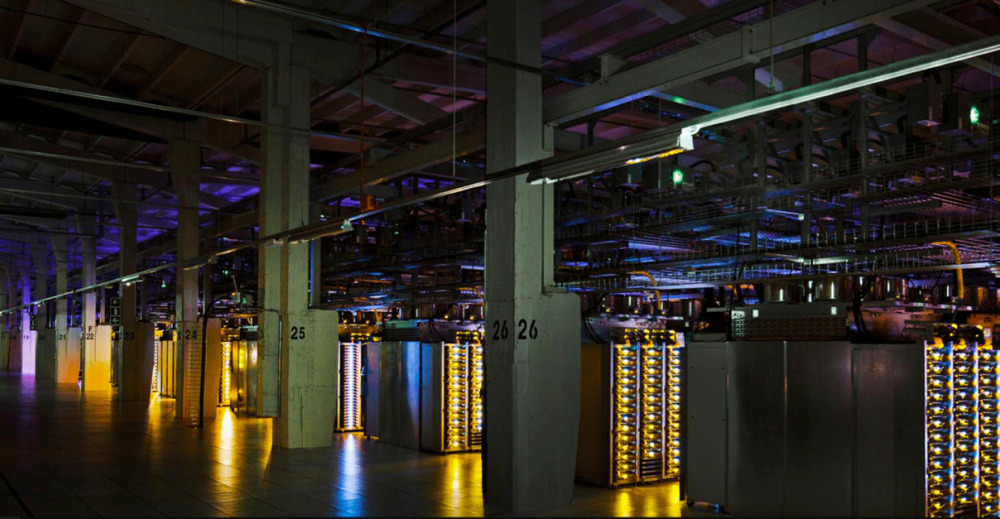

NOUVEAUTÉS

The Social Network, le film retraçant la création de Facebook
«Mark Zuckerberg crée The Facebook en 2004. Il souhaite créer un monde connecté. Le succès devient mondialement reconnu. Cependant, sa course à la réussite est source de querelles et procès.

«Les data-centers et la surconsommation d’électricité générée»
«Comme le reste d’Internet, les informations des réseaux sociaux sont stockées. On appelle ces lieux de stockage des data-centers. Ce sont les principaux acteurs de la pollution d’Internet.»

«L’utilisation initialement non-prévue des data-centers par la chaleur produite»
«Plusieurs solutions sont utilisées pour parer à ces problèmes. Les data-centers sont utilisés par différentes entreprises, pour une fin alternative d’utilisation de l’énergie.»